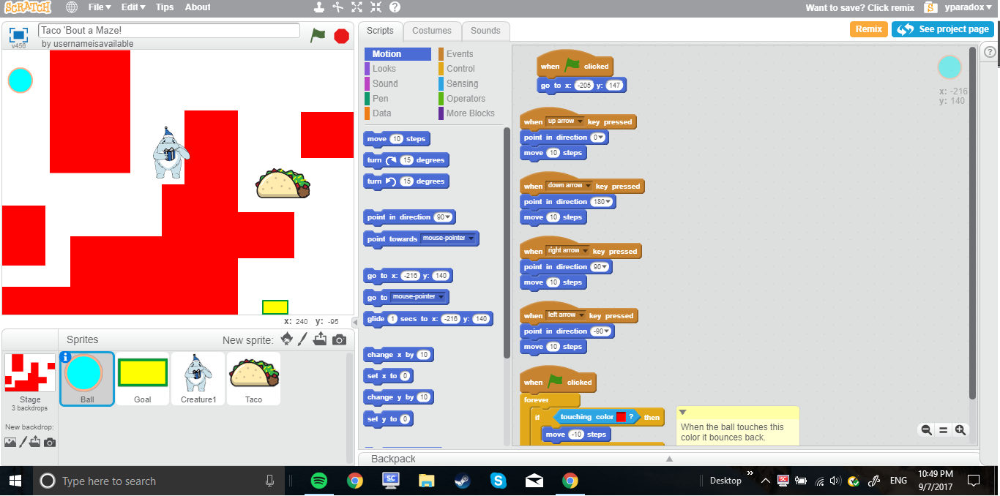

Home
Portfolio
About Me
Porfolio Page


- We changed the layout of the maze, the color of the ball, and what the goal ends up saying when you reach it. We also added two extra sprites (the blue troll and the taco). In addition, we managed to code out a point system!

This is my Scratch project that I worked on with my partner, based off of the classic "Goldilocks and the Three Bears" story